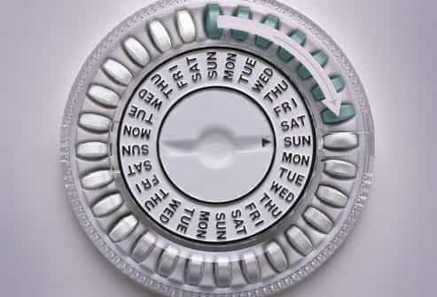

Michael is the author of Staying Married in a Degenerate Age. Follow him on Twitter or Facebook. You can read more of his writing at Honor and Daring.


Last week I tackled the question as to why so many women are leftists. This week I address an even more important question: Why are so many women sluts?
Today, it is not uncommon for a young woman to become sexually active in high school and continue through college and her early working years. Most of these relationships are short-lived—lots of men tend to move on after they have attained their goal—so it is not unusual for a modern girl to rack up some impressive numbers before she begins thinking about settling down. In other words, it is easy for modern girls to become sluts without even thinking about it.
But these women are not having sex by themselves. Aren’t most men also promiscuous? Not according to the stats. Slutty women are not sleeping with all men—they are sleeping with the most desirable men—also known as the Chads. The less desirable men are getting very little action, if any at all.

Now, you might be thinking that there is a double standard. shouldn’t men who sleep with lots of women also be called sluts? In a completely “fair” world the answer would be yes, but life is not fair. Our culture recognizes that there is something especially bad about loose women so the word “slut” almost always refers to a woman.
But what is so bad about a woman who gives it up easily? The answer has to do with biology. For a man, the price for having sex is very low. His investment consists of a few moments of thrusting. On the other hand, for women the price of having sex has been very, very high until recently. For women, sex can result in a pregnancy which means nearly ten months of being pregnant plus, in the premodern world, two years of nursing. If a woman chose to spread her legs for a man who was unwilling or unable to protect and provide, she literally endangered her own life and the life of her unborn child.
Over the course of tens of thousands of years, culture evolved to recognize the simple fact that vaginas carry a higher value than penises. One of the ways that society encouraged women to value themselves highly was by ostracizing women who didn’t value themselves. Marriage itself evolved to support this situation. Women traded their sex during their high market value years in exchange for being cared for later.
Surprisingly, it was women who were mostly responsible for policing other women. Women viewed the loose woman as threat because she could steal husbands away. Loose women also decreased the sexual market value for all women—if a high quality man could get it cheaply elsewhere he would be less likely to commit or stay committed. Thus, women of the past cut promiscuous women off from the rest of society. One of the ways they did this was to call loose women by derogatory names like slut, hussy, tramp, or tart.
Nontraditional women who are angered by this article likely support Hillary–one of the biggest cad-enabling women in history.
By the way, there is a male analog to a female slut: a cad. While women policed sluts, men in traditional societies policed the cads. No man wanted a cad around his sister, wife, or daughter so known cads were kept out of honorable society, but never with the same fervor that women used against sluts. They didn’t need to. Honorable women had little motivation to succumb to the cad.

The institution of women discouraging other women from becoming sluts has fallen apart. The biggest reason for this has been the introduction of the birth control pill in the 1960s. The Pill made sex for women less expensive. For the first time in history, women could control their fertility. Now women could behave like men when it came to sex.
Predictably, as more women became more promiscuous, old cultural constructs started to go away. The institution of women policing other women fell apart. How could a former slut call a younger woman a slut for doing the same thing she did while she was younger?
Unfortunately, other institutions that were related to the old biological order also started to suffer. As sex became easy to get outside of marriage, it lowered men’s incentive to get married in the first place. And mothers who had ridden the carousel during their youth could not teach their daughters to be chaste so generations of girls now are being raised to regard their sexuality as something to be given away cheaply.
The Pill not only increased the number of sluts, it increased the number of cads. The cads of today are sometimes called PUAs. With women giving it up more easily, it was just a matter of time before men figured out almost scientific ways to cajole women to voluntarily drop their panties. PUAs get a bad rap from leftist women, but PUAs are not rapists. The women that they sleep with are giving it up willingly.
A second factor also coincided with the arrival of the Pill and that is that Hollywood and other forms of media started actively encouraging slutty behavior in women. Most of this was a result of the feminist push for equality. If men could sleep around with little disapproval, women should be afforded the same benefits.
An interesting Amazon review on Kevin MacDonald’s Culture of Critique indicates how the general method for how this was done. This example is about fostering disrespect for parents, but you can be sure that portraying promiscuous behavior also gets the same treatment:
As a former leftist Hollywood Jew (I wrote TV shows), I can say from personal experience that Prof. MacDonald is 100% correct in this book. The shows I worked on: Mary Tyler Moore Show, That Girl, & Love American Style, among others, were nothing more than Jewish tools (for the most part) to undermine the innocence of American WASP culture, (“Cultural Marxism” as Prof. MacDonald calls it).
I became disturbed with the studio editorial “rule” that children should be portrayed as sassy and disrespectful towards their parents. A few times I presented a script to my editor (also a Jewish guy) in which I had the child character behaving politely and respectfully towards his parents. The editor changed the lines to make the child bratty/sassy and then told me “… that’s the way it should be done from now on, unless I tell you otherwise”. That’s when I started to see that something else was going on besides just making TV shows. I could see the changes in American society resulting from all this TV propaganda. I eventually left writing and became a teacher.
If the review is genuine, Hollywood producers and writers actively undermine morals in the US. Today, the message that promiscuity is good—even empowering—is ubiquitous. Rather than being revered as it was in the past, young women are taught to regard virginity as an ugly liability that they should strive to lose at the first possible opportunity.
The Pill and the media are the biggest factors in creating our current culture which encourages women (and men) to be as promiscuous as possible. Yet, it has not been able to stamp out tens of thousands of years of evolution. Even today’s modern woman doesn’t want to be called a slut no matter how much they are told that it is a badge of honor and that is why the word continues to be so hated.
Unfortunately, barring a return of the patriarchy, we are going to have to live with this situation for a lot longer.
Read More: Women Are Sluts If They Sleep Around But Men Are Not